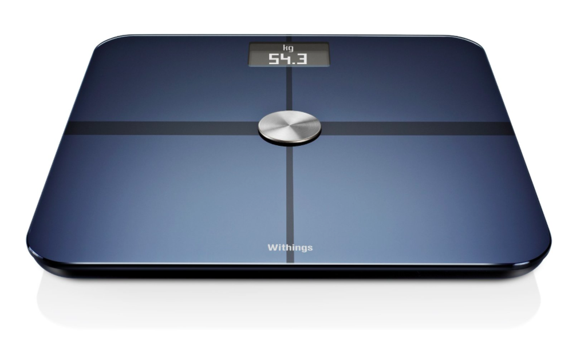

Specifications of Healthline Weight Tracker Weighing Scale (Black)
Technical Details
GENERAL
Model Number BS-23
Type Personal Weighing Scale
Accuracy 0.2 g
Units of Measurement kg, lb
Tare Function Yes
Maximum Weighing Capacity 180 kg
DISPLAY FEATURES
Display Size 76 x 40 mm
Display Type Digital
Other Display Features 3.5-inch LCD Screen
DIMENSIONS
Weight 63 g
Other Dimensions Dimensions: 37.9 x 46.5 mm
Price: Rs. 2,590.00